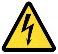

Личные данные :
- Дата рождения : 10.08.1987
- Возраст : 27 лет
- Место рождения : Украина, г. Полтава
- Семейное положение : не женат
- Телефон : +380953628440
Образование
- Высшее образование :
- 2005 – 2010 гг ПолтНТУ им. Ю. Кондратюка
Факультет : Менеджмента и бизнеса.
Специальность : Экономическая кибернетика (магистр)
- 2005 – 2010 гг ПолтНТУ им. Ю. Кондратюка
- Дополнительное образование :
- 2008 г Учебный центр «Информационные технологии»
Курсы «Ремонт и обслуживание компьютерной техники и системного администрирования»
Квалификация : 4 разряд 7241.1 Электромеханик по ремонту и обслуживанию счетно-вычислительных машин.
- 2008 г Учебный центр «Информационные технологии»
- Знание ПК :
- На уровне администратора, w2k3/Vista/7/XP/UNIX, сборка/настройка/ремонт ПК, прокладка/настройка/сопровождение сетей.
Опыт работы
| 2015 г (март) - сегодня | «ТОВ Нова Пошта» - специалист тех.поддержки | |
|---|---|---|
| 2013 г – 2015 г | «ТОВ Нова Пошта» - рук.отдела развития контакт-центра | |
| 2011 г – 2013 г | «ТОВ Нова Пошта» - менеджер по логистике | |
| 2011 г (зима) | «ПолтавскийМЭЗ» - администратор компьютерных сетей | |
| 2009 г (лето) | «Полтавагаз» - администратор компьютерных сетей | |
| 2008 г – 2011 г | КП «Аварийно-диспетчерская служба» - водитель |  |
Хобби
- Хоккей
- Русский бильярд
- Коллекционирование